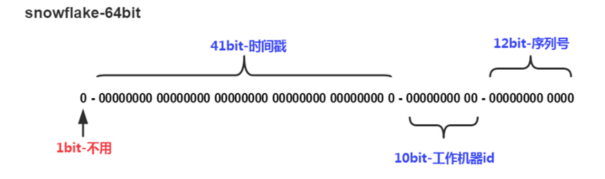

分布式ID
1 方案选择
UUID
UUID是通用唯一识别码（Universally Unique Identifier)的缩写，开放软件基金会(OSF)规范定义了包括网卡MAC地址、时间戳、名字空间（Namespace）、随机或伪随机数、时序等元素。利用这些元素来生成UUID。
UUID是由128位二进制组成，一般转换成十六进制，然后用String表示。
550e8400-e29b-41d4-a716-446655440000
UUID的优点:
- 通过本地生成，没有经过网络I/O，性能较快
- 无序，无法预测他的生成顺序。(当然这个也是他的缺点之一)
UUID的缺点:
- 128位二进制一般转换成36位的16进制，太长了只能用String存储，空间占用较多。
- 不能生成递增有序的数字
数据库主键自增
大家对于唯一标识最容易想到的就是主键自增，这个也是我们最常用的方法。例如我们有个订单服务，那么把订单id设置为主键自增即可。
单独数据库 记录主键值
业务数据库分别设置不同的自增起始值和固定步长，如
第一台 start 1 step 9 第二台 start 2 step 9 第三台 start 3 step 9
优点:
- 简单方便，有序递增，方便排序和分页
缺点:
- 分库分表会带来问题，需要进行改造。
- 并发性能不高，受限于数据库的性能。
- 简单递增容易被其他人猜测利用，比如你有一个用户服务用的递增，那么其他人可以根据分析注册的用户ID来得到当天你的服务有多少人注册，从而就能猜测出你这个服务当前的一个大概状况。
- 数据库宕机服务不可用。
Redis
熟悉Redis的同学，应该知道在Redis中有两个命令Incr，IncrBy,因为Redis是单线程的所以能保证原子性。
优点：
- 性能比数据库好，能满足有序递增。
缺点：
- 由于redis是内存的KV数据库，即使有AOF和RDB，但是依然会存在数据丢失，有可能会造成ID重复。
- 依赖于redis，redis要是不稳定，会影响ID生成。
雪花算法-Snowflake
Snowflake是Twitter提出来的一个算法，其目的是生成一个64bit的整数:

- 1bit:一般是符号位，不做处理
- 41bit:用来记录时间戳，这里可以记录69年，如果设置好起始时间比如今年是2018年，那么可以用到2089年，到时候怎么办？要是这个系统能用69年，我相信这个系统早都重构了好多次了。
- 10bit:10bit用来记录机器ID，总共可以记录1024台机器，一般用前5位代表数据中心，后面5位是某个数据中心的机器ID
- 12bit:循环位，用来对同一个毫秒之内产生不同的ID，12位可以最多记录4095个，也就是在同一个机器同一毫秒最多记录4095个，多余的需要进行等待下毫秒。
上面只是一个将64bit划分的标准，当然也不一定这么做，可以根据不同业务的具体场景来划分，比如下面给出一个业务场景：
- 服务目前QPS10万，预计几年之内会发展到百万。
- 当前机器三地部署，上海，北京，深圳都有。
- 当前机器10台左右，预计未来会增加至百台。
这个时候我们根据上面的场景可以再次合理的划分62bit,QPS几年之内会发展到百万，那么每毫秒就是千级的请求，目前10台机器那么每台机器承担百级的请求，为了保证扩展，后面的循环位可以限制到1024，也就是2^10，那么循环位10位就足够了。
机器三地部署我们可以用3bit总共8来表示机房位置，当前的机器10台，为了保证扩展到百台那么可以用7bit 128来表示，时间位依然是41bit,那么还剩下64-10-3-7-41-1 = 2bit,还剩下2bit可以用来进行扩展。
时钟回拨
因为机器的原因会发生时间回拨，我们的雪花算法是强依赖我们的时间的，如果时间发生回拨，有可能会生成重复的ID，在我们上面的nextId中我们用当前时间和上一次的时间进行判断，如果当前时间小于上一次的时间那么肯定是发生了回拨，算法会直接抛出异常.
2 黑马头条
使用雪花算法 （代码 toutiao-backend/common/utils/snowflake)
# Twitter's Snowflake algorithm implementation which is used to generate distributed IDs.
# https://github.com/twitter-archive/snowflake/blob/snowflake-2010/src/main/scala/com/twitter/service/snowflake/IdWorker.scala
import time
import logging
class InvalidSystemClock(Exception):
"""
时钟回拨异常
"""
pass
# 64位ID的划分
WORKER_ID_BITS = 5
DATACENTER_ID_BITS = 5
SEQUENCE_BITS = 12
# 最大取值计算
MAX_WORKER_ID = -1 ^ (-1 << WORKER_ID_BITS) # 2**5-1 0b11111
MAX_DATACENTER_ID = -1 ^ (-1 << DATACENTER_ID_BITS)
# 移位偏移计算
WOKER_ID_SHIFT = SEQUENCE_BITS
DATACENTER_ID_SHIFT = SEQUENCE_BITS + WORKER_ID_BITS
TIMESTAMP_LEFT_SHIFT = SEQUENCE_BITS + WORKER_ID_BITS + DATACENTER_ID_BITS
# 序号循环掩码
SEQUENCE_MASK = -1 ^ (-1 << SEQUENCE_BITS)
# Twitter元年时间戳
TWEPOCH = 1288834974657
logger = logging.getLogger('flask.app')
class IdWorker(object):
"""
用于生成IDs
"""
def __init__(self, datacenter_id, worker_id, sequence=0):
"""
初始化
:param datacenter_id: 数据中心（机器区域）ID
:param worker_id: 机器ID
:param sequence: 其实序号
"""
# sanity check
if worker_id > MAX_WORKER_ID or worker_id < 0:
raise ValueError('worker_id值越界')
if datacenter_id > MAX_DATACENTER_ID or datacenter_id < 0:
raise ValueError('datacenter_id值越界')
self.worker_id = worker_id
self.datacenter_id = datacenter_id
self.sequence = sequence
self.last_timestamp = -1 # 上次计算的时间戳
def _gen_timestamp(self):
"""
生成整数时间戳
:return:int timestamp
"""
return int(time.time() * 1000)
def get_id(self):
"""
获取新ID
:return:
"""
timestamp = self._gen_timestamp()
# 时钟回拨
if timestamp < self.last_timestamp:
logging.error('clock is moving backwards. Rejecting requests until {}'.format(self.last_timestamp))
raise InvalidSystemClock
if timestamp == self.last_timestamp:
self.sequence = (self.sequence + 1) & SEQUENCE_MASK
if self.sequence == 0:
timestamp = self._til_next_millis(self.last_timestamp)
else:
self.sequence = 0
self.last_timestamp = timestamp
new_id = ((timestamp - TWEPOCH) << TIMESTAMP_LEFT_SHIFT) | (self.datacenter_id << DATACENTER_ID_SHIFT) | \
(self.worker_id << WOKER_ID_SHIFT) | self.sequence
return new_id
def _til_next_millis(self, last_timestamp):
"""
等到下一毫秒
"""
timestamp = self._gen_timestamp()
while timestamp <= last_timestamp:
timestamp = self._gen_timestamp()
return timestamp
if __name__ == '__main__':
worker = IdWorker(1, 2, 0)
print(worker.get_id())